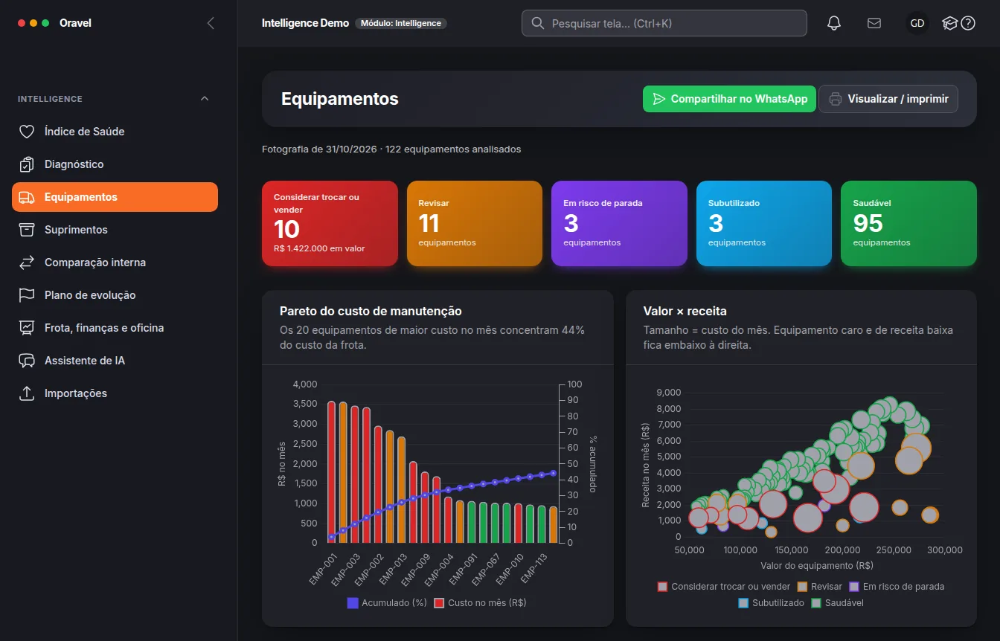
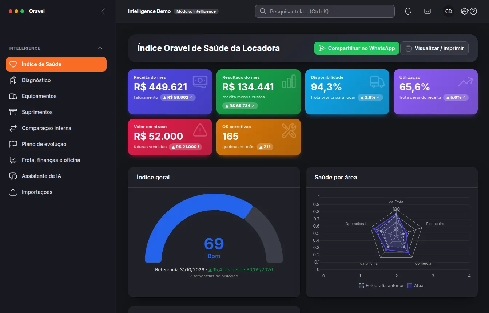
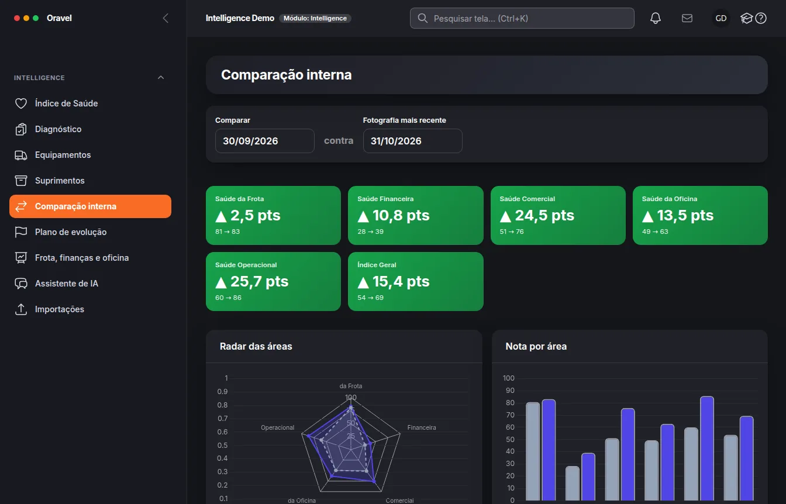

Oravel Intelligence
Uma plataforma de inteligência operacional criada exclusivamente para empresas de locação de equipamentos.
Você sabe realmente como está a saúde da sua locadora?
Sua empresa pode estar faturando mais e ainda assim perdendo rentabilidade.
Transforme os dados da sua operação em indicadores claros para acompanhar rentabilidade, utilização da frota e oportunidades de melhoria.
Criado por quem viveu os desafios da gestão de locadoras e transformou essa experiência em uma plataforma de inteligência.
Você escolhe o que acompanhar. Sem trocar seu sistema. Nenhum arquivo é enviado nesta página.Os maiores problemas de uma locadora nem sempre aparecem no faturamento.
Você pode estar trabalhando muito, com o pátio girando, e ainda assim perder margem sem perceber.
Com o Oravel Intelligence você poderá identificar:
- equipamentos que não geram o retorno esperado;
- custos que reduzem sua margem;
- oportunidades de melhoria operacional;
- pontos de atenção para os próximos meses.
O problema não é ter dados.
É saber o que eles mostram.
“Eu já tenho meus números.”
Você provavelmente já tem sistema, relatórios, planilhas e experiência.
O Intelligence organiza essas informações e ajuda a transformar dados em decisões.
É uma visão estruturada, que complementa o trabalho da sua equipe e do seu contador. A decisão continua sendo sua.
Não é mais um sistema de gestão.
O Oravel Intelligence não substitui seu ERP. Ele funciona como uma camada de inteligência acima dos dados da sua operação.
Você continua usando seu sistema atual. O Oravel Intelligence transforma seus dados em indicadores e visões que ajudam sua gestão.
Os dados entram pela planilha padrão, enviada na sua área exclusiva.
ERP atual + Oravel Intelligence = gestão com inteligência
Veja algumas informações que o Oravel Intelligence apresenta
Exemplo ilustrativo. O painel utiliza os dados da sua própria empresa.
Locadora fictícia
Painel Operacional da Locadora
Indicador geral
Indicadores e oportunidades
Evolução operacional
Este é apenas um exemplo.
Os indicadores do seu painel refletem a realidade da sua locadora.
Cada empresa possui desafios diferentes. Por isso você escolhe o principal ponto que deseja acompanhar.
Com o Oravel Intelligence você poderá identificar:
- equipamentos que não geram o retorno esperado;
- custos que reduzem sua margem;
- oportunidades de melhoria operacional;
- pontos de atenção para os próximos meses.
E na sua locadora, o que apareceria?
Conhecer o Oravel IntelligenceOs números da operação podem mostrar problemas antes que eles apareçam no caixa.
Seus dados ficam protegidos
Seus dados são tratados em ambiente seguro. O envio das informações acontece somente após a criação da sua conta e confirmação de identidade.
Nesta página, você não envia nenhum arquivo.
O Oravel Intelligence foi criado para gestores que:
- administram locadoras de equipamentos;
- precisam tomar decisões melhores sobre frota;
- querem entender a rentabilidade real da operação;
- querem acompanhar evolução e melhorias.
Veja a plataforma funcionando
Uma plataforma que transforma os dados da operação da sua locadora em indicadores, informações e visões para melhores decisões.
Tela 1
Escolha sua visão
Você escolhe qual área da sua operação deseja acompanhar.

Tela 2
Painel operacional
Transforme informações da operação em uma visão clara do negócio.

Tela 3
Evolução
Acompanhe a evolução da sua operação ao longo do tempo.

Como acessar
- Faça seu cadastro.
- Confirme seu e-mail e crie sua senha.
- Entre na sua área exclusiva e baixe a planilha padrão.
- Preencha e envie em ambiente seguro.
Os primeiros indicadores ficam disponíveis no mesmo dia do envio da planilha.
Não exige:
Tenha acesso ao Oravel Intelligence para acompanhar a evolução da sua locadora por R$ 39,90/mês.
Conhecer o Oravel IntelligenceA Oravel está construindo o Centro de Inteligência do Mercado de Locação de Equipamentos.
Uma plataforma criada para reunir indicadores, conhecimento e tecnologia aplicada exclusivamente ao setor de locação.
Por trás dela está a experiência de quem administrou locadora por muitos anos.
Perguntas frequentes
É uma consultoria?
Não. O Oravel Intelligence é uma plataforma de inteligência operacional para locadoras. Você acessa sua área exclusiva, acompanha indicadores e visualiza oportunidades de melhoria da sua operação.
Preciso trocar meu sistema?
Não. Você preenche a planilha padrão com as informações da sua locadora e continua usando o seu sistema.
Quando envio meus dados?
Somente dentro da sua área exclusiva, depois de criar a conta e confirmar sua identidade.
Qual planilha devo usar?
A planilha padrão, disponível para baixar na sua área exclusiva.
Quanto tempo demora?
Os primeiros indicadores ficam disponíveis no mesmo dia do envio da planilha.
Meu contador já não faz isso?
O contador é essencial para as áreas contábil e fiscal. O Oravel Intelligence mostra indicadores da operação. Um complementa o outro.
Comece a enxergar melhor a sua operação
Tenha uma visão clara dos indicadores da sua locadora e acompanhe oportunidades de melhoria.
Conhecer o Oravel Intelligence